Animator v2
A character's own animations, made from her body. Export her from the Character Studio, open her here, move five sliders, bake. Her walk, her run, how she sits, sleeps, opens a door and picks something up are written into her own file, ready for Godot; and since animations v3 how she sneaks, crawls, creeps and scuttles, peeks round a wall, lunges at you, punches, swings what she holds, eats and drinks. Nothing is recorded motion: a tall thin man, a short heavy woman, a goblin and a ghoul get different ones because they have different bodies.
1What it is
The three it's tested on: a skinny man (60 kg on 1.80 m), a normal woman (56 kg on 1.63 m) and a chubby woman (73 kg on 1.60 m), each walking her own walk in Godot. The man's stride is longest; the heavier woman's steps are shorter and slower, her arms carried out past her hips, her thighs pressing together instead of her feet going wide.
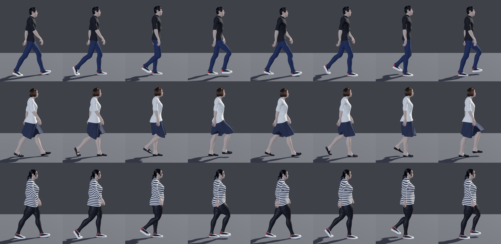
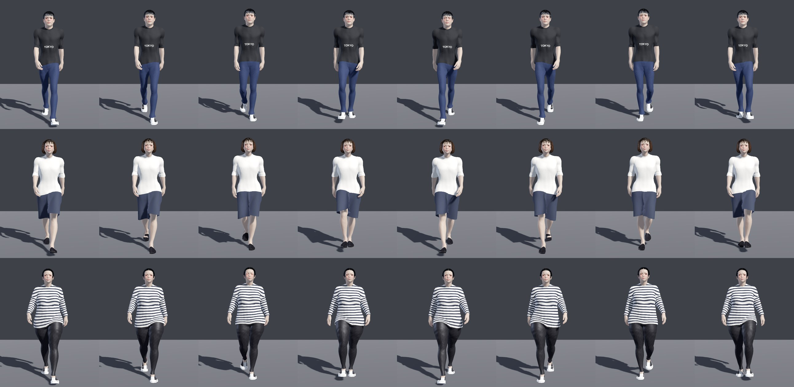
Running, her arms are carried bent and driven back: her fists go from beside her hips to in front of her chest, her palms to her body. A broad body's forearms point ahead past its belly instead of across it.
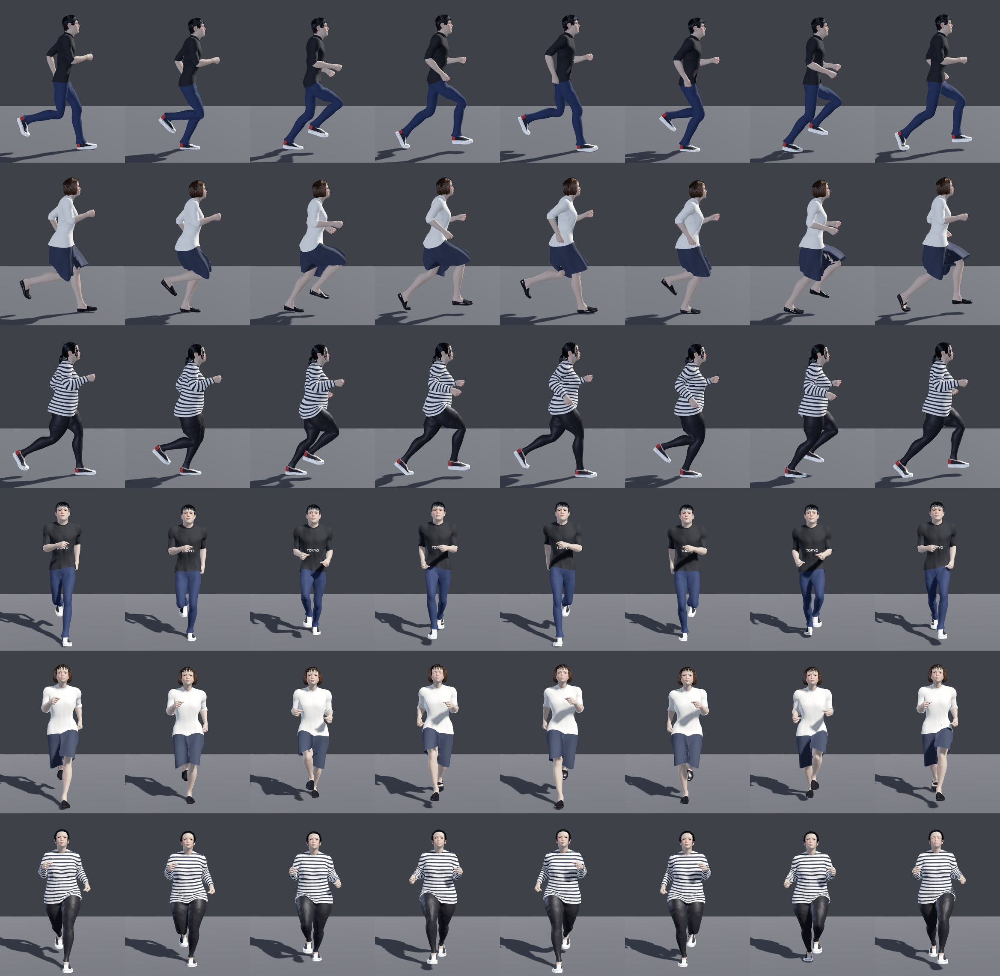
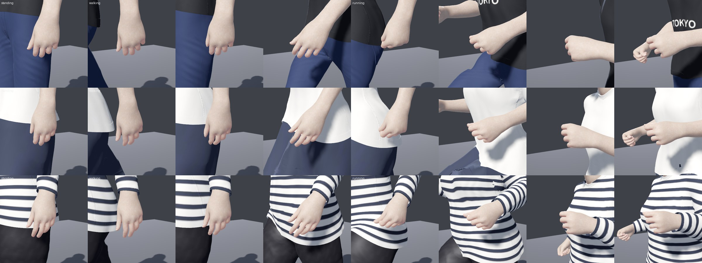
2Export her, open her
- In the Character Studio: Export for Godot. Her file lands in
Exports/characters/<name>/<name>.glb. - On the dashboard (
python dashboard.py): Animator v2, Start, Open. Or by itself:python tools/animator/serve.py
thenhttp://127.0.0.1:8788. - Pick her in Character. A file from somewhere else: Open a .glb…
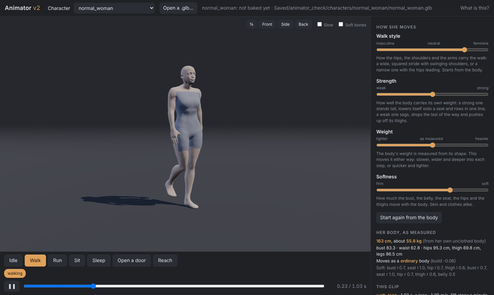
She is measured as she opens: her height, a weight, her bust, waist and hips, her thigh, her legs. From her own unclothed body, which every Studio export carries inside it: a thick jumper doesn't make her heavy.
Drag to turn the view, the wheel to come closer, right-drag to move it. Space plays and pauses. Slow plays at a quarter speed. Soft bones shows where her soft tissue hangs from.
3The five sliders
| Walk style | Masculine to feminine. A masculine walk sets the feet wide, squares the stride and swings the shoulders; a feminine one sets them nearly in line, lets the hips list and turn, keeps the shoulders quiet. It starts from her body. |
| Strength | How well she carries her own weight. Strong: she stands tall, lowers herself onto a seat and rises in one line. Weak: she sags, drops the last of the way down, rocks, and pushes up off her thighs. |
| Weight | Her weight is measured. This moves it either way: slower, a little wider and deeper into each step, or quicker and lighter. |
| Softness | How much her bust, belly, seat, hips and thighs move as she does. Her clothes move with them. |
| Bounce | How long they go on swinging once they've been set going. At the left they settle at once; in the middle, a few swings and they're still; at the right they keep ringing. |
How her soft tissue moves. Each soft part swings from where it's rooted, as a jiggle bone does (the way of the JiggleBones plugin for Godot): it lags when she starts, carries on when she stops, and rings a few times. Softness is how much of that shows; Bounce is how long it lasts. Soft bones over the view shows where each part is rooted.
Every slider changes what you're watching at once. Start again from the body puts them back.
4The clips
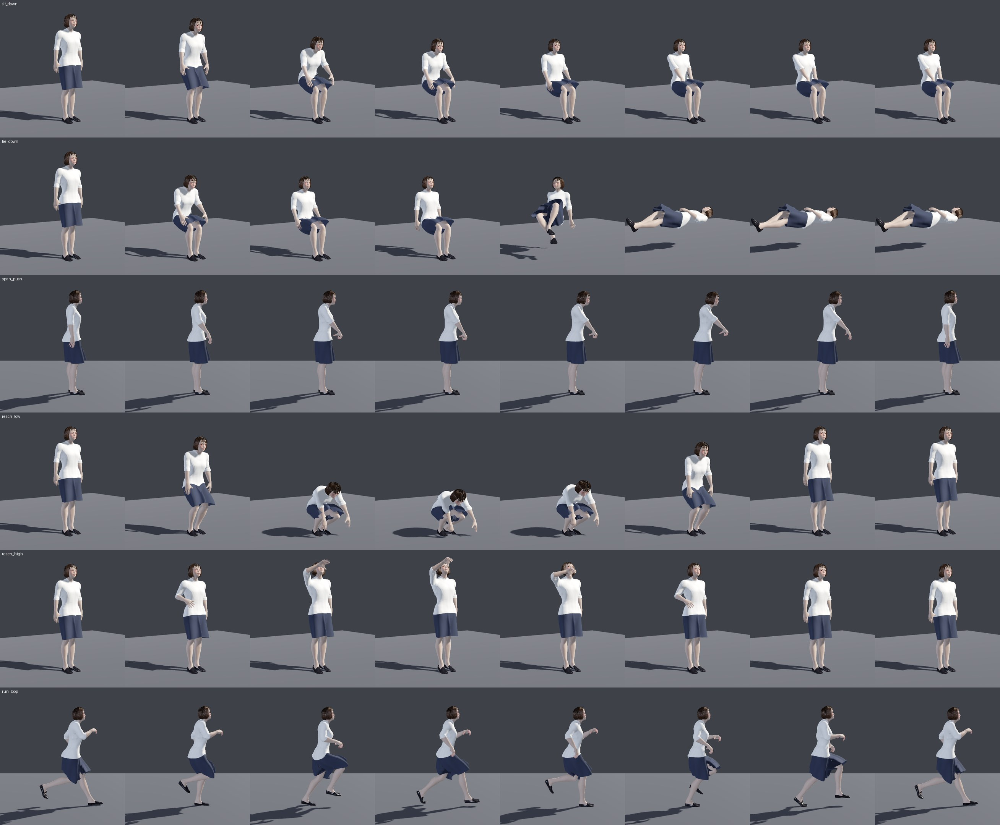
idle | Standing: breathing, her weight on one leg as her style has it. |
walk, run | In place, one stride each. Godot moves her; each clip knows how fast it travels. |
sit_down, sit, stand_up | Onto a seat 45 cm high; sat, her hands on her thighs; up again. |
lie_down, sleep, get_up | She sits on the bed's edge, turns and lies back, her head to her left. Asleep. Up again. (_r: her head to her right.) |
open_push, open_pull, open_slide | A hand to a handle a metre up, and the door moved. (_l: her left hand.) |
reach_low, reach_mid, reach_high | Taking something from the floor, a table, a shelf. (_l: her left hand.) |
sneak, crouch | A careful walk on bent knees, her hands low; stopped, crouched. More. |
crawl, crawl_idle | On hands and knees; stopped on all fours. |
creep, creep_idle, scuttle | A creature's: hunched with hooked hands; hunched and still; fast on hands and feet. |
peek_out, peek, peek_back | Out past a wall's end, a hand on it; held; back behind it. (_l: to her left.) More. |
scare_lunge, scare_loom, scare_snap, scare_claw | Jump scares that start already wound up: thrown at you; risen over you; her head snapping up; clawed up from all fours. |
punch, swing, hit_react | A punch; an overhead swing of whatever she holds; being hit. (_l: her left hand.) More. |
eat, drink | Her hand to her mouth: two bites; one long sip with her head back. (_l: her left hand.) More. |
look_around, knock, cower | Looking to both sides; three raps on a door; crouched with her arms up over her head. |
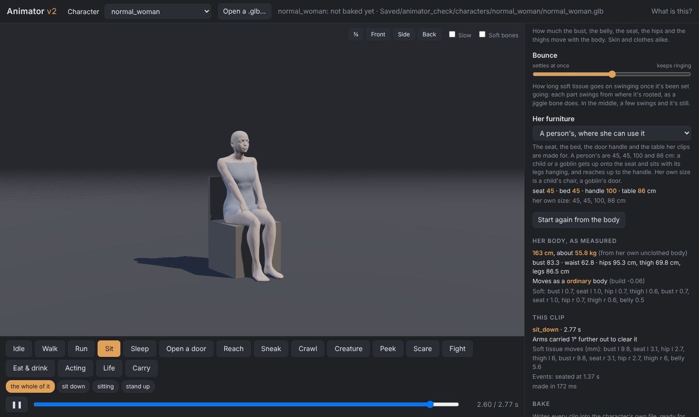
5Bake
Bake into the file writes all 53 clips into her own .glb, in place, in a few seconds. The
list then says baked. Bake again any time with other sliders: the file isn't any bigger for it.
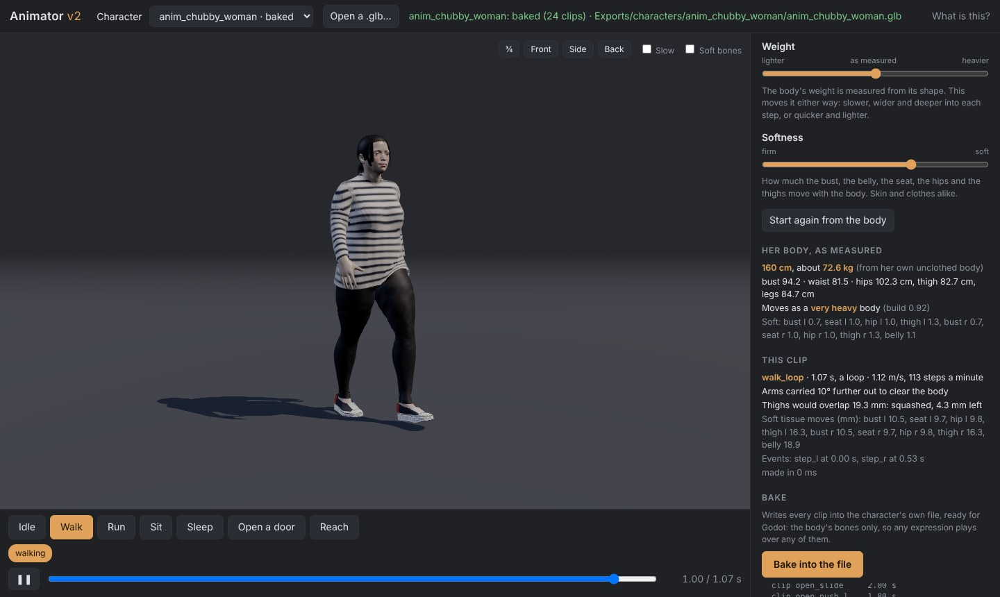
From the command line:
node tools/animator/bake.mjs Exports/characters/anna/anna.glb --style 0.6 --strength 0.5
6In Godot: Motion
Drop her .glb into your project (python tools/godot_byhand.py exports <your project> brings every
exported character in). Her clips are in her AnimationPlayer already. To have her do things:
- Put her in the scene. Add a Node under her, name it Motion, and give it the script
res://starter/motion.gd. - From any script:
var m := $Her/Motion
m.walk_to($Hall/ByTheDoor) # she walks there, turning as she goes
m.run_to($Kitchen)
m.sit($Chair/Seat) # walks to it and sits; m.stand() gets her up
m.sleep($Bed/Edge, $Bed/Pillow) # sits on the edge, lies down; m.wake() gets her up
m.open($Door/Handle, $Door) # her hand to the handle; the door's own use() as she pushes
m.pick_up($Key) # walks to it, takes it: from the floor, a table or a shelf by how high it is
m.sneak_to($Hall/Corner) # low and careful; crawl_to, creep_to, scuttle_to the same. She stays low: m.rise()
m.peek($Hall/Corner, 3.0) # round a wall's end for three seconds
m.scare("lunge", player, true) # a jump scare, now: turned to you, thrown at you, hidden when it's been shown
m.head_follow(true) # her head follows you (within 160 degrees unless you say another)
m.drink($Table/Bottle) # takes it by its grip, drinks; m.eat($Apple) eats it
m.punch(player) # goes to where it reaches, turns with them, lands it; m.swing(player) swings what she holds
await m.done # "walk", "sit", "sleep", "open", "pick_up", "peek", "scare", "punch", "drink"...
She moves at the speed her walk was made for, so her feet keep step. Asked for something while she's sat or asleep, she gets up first. Each call takes the place of the one before.
7Seats, beds, handles
For sit, sleep and open she needs to know where. A Marker3D:
| A seat | On its front edge, at the height you sit at. Its blue arrow (+Z) the way she'll face when she's sat. |
| A bed | On the edge she gets in from, at the mattress's height, its blue arrow pointing away from the bed. A second marker where her head should be (the pillow) picks which way she lies. |
| A handle | At the handle, its blue arrow pointing into the door (the way she faces to open it). |
She walks to where the clip needs her to stand, so her hand comes down on the handle and her hips on the seat.
8Acts: by a quest's words
The same without a script. Add a Node anywhere with res://starter/act.gd:
| Who | The character (her Motion node is found under her). |
| Act | walk_to, run_to, sit, stand_up, sleep, wake_up, open, reach, pick_up, play, face; and sneak_to, crawl_to, creep_to, scuttle_to, rise, peek, scare (its Scare kind, Then hide), punch, swing, eat, drink, look_around, knock, cower, head_follow, head_free. |
| Target | Where, or what: a marker, a seat's, a handle's, a thing. Also: the door for open, the pillow for sleep. |
| Needs | The Story's words. She does it by herself when they come to hold: task:key (that task ticked),
on:find_key (on your list), a flag's name. |
| Then | Another act to fire when she's done. Tick, Flag, Say: a task ticked, flags switched, a line. |
A row of these is a routine. "When the power's back she walks to the kitchen, takes the kettle, then sits":
Act 1 act walk_to target Kitchen/ByTheHob needs task:power then Act 2 Act 2 act pick_up target Kitchen/Kettle then Act 3 Act 3 act sit target Kitchen/Chair/Seat tick aoi_sat
Anything with a fire() can start one too: an event area, a cue, a scare.
9Clips of your own
A dance, a wave, a scare's own move: anything that isn't one of hers.
- An animation file: on her Motion node, More:
{"dance": "res://animations/dance.res"}. Thenm.play("dance"), or an act with Act play and Clip dance. - An animation her model already has: just its name.
- A Kimodo motion (an
.npz): a Moves node beside Motion (res://starter/moves.gd) with it in More;m.play("dance")finds it there.
The hunt's moves.gd uses her own clips too: a baked character stalks and chases with her own walk and run with
nothing set.
Her soft tissue in Godot
Every baked clip carries how her soft tissue swings in that clip. A clip can't know what your game does with her:
that she stops, turns, or plays a dance of yours that has nothing in it for those parts. So in Godot the same swing
is worked out as the game runs: her Motion node turns it on by itself (Live Jiggle, on), and so does an
HSCharacterLook under her. Nothing to set up. She jiggles when she pulls up from a run, and in your own
clips too.
| Less, more, off | Once the game runs she has an HSJiggle node under her: its Amount (0 none, 1 as
baked, 2 twice). Soft off: only what her clips carry. |
| From a script | $Her/HSJiggle.set_amount(0.5); after you move her somewhere at once,
$Her/HSJiggle.reset(). |
| No look plugin in the project | She still has what her clips carry. |
10Creatures and going low
Five ways of going besides walking and running, each a loop made at its own speed so her feet, knees and hands stay where they're put, and each with a loop she rests in when she stops:
| Sneak | On bent knees, leant forward, her hands low in front of her. Stops crouched. About a third of her walk's speed. |
| Crawl | On hands and knees, a hand and the other knee together. Stops on all fours. |
| Creep | A creature's: hunched over with its head up and its hands hooked in front of it. Stops hunched. |
| Scuttle | A creature's: on its hands and the balls of its feet, knees off the floor, fast. Stops on all fours. |
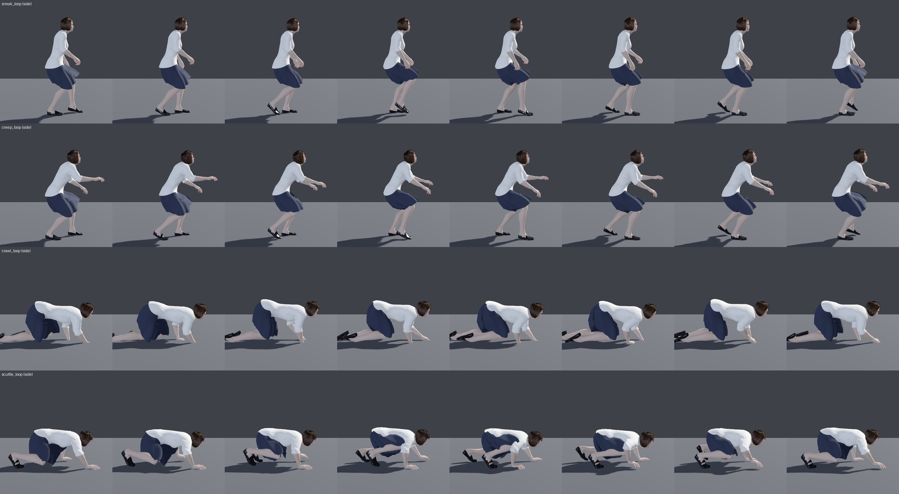
m.creep_to($Cellar/Door) # hunched; when she gets there she stays hunched m.scuttle_to(player) # on hands and feet, fast m.rise() # up again (any walk_to, sit or pick_up stands her up first too) m.cower() # crouched with her arms over her head, until m.cower(false)
Creatures. The clips are made from the body, and a creature's isn't a person's: a goblin's arms are long for its legs, a ghoul is hunched with arms to its knees, an ogre's hands are twice a person's for its height. Each clip is held to its rules on five of the Studio's creature cards as well as on people: nothing under the floor, no arm asked for more than its length, a wall clear of a hunched face, a hand that gets to what it reaches for.
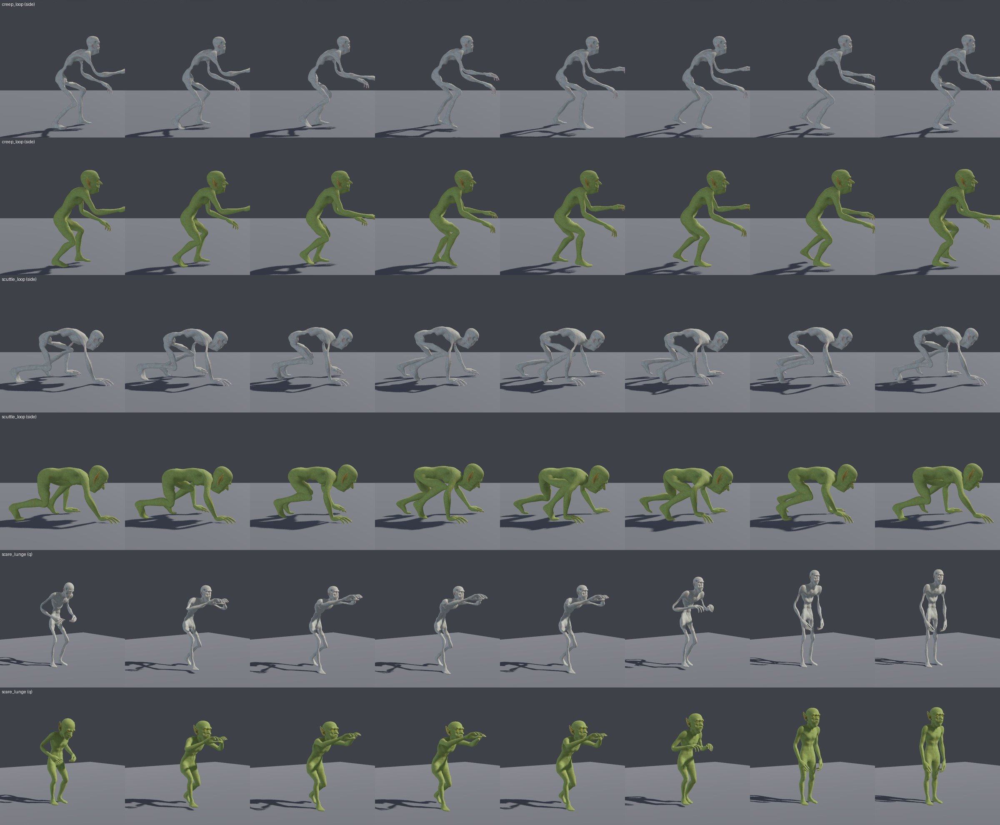
11Peeks and jump scares
A peek
Put a Marker3D at the foot of a wall's end, its blue arrow (+Z) pointing out the way she should look.
m.peek(marker, 3.0): she goes and stands hidden behind the wall with its end to her right, leans out past it
with one hand on the wall's end and the other flat on the wall, holds it three seconds, draws back. m.peek(marker, 3.0, true): the wall's end to her left.
Her events say out when her head is past the wall and hidden when it's back behind it.
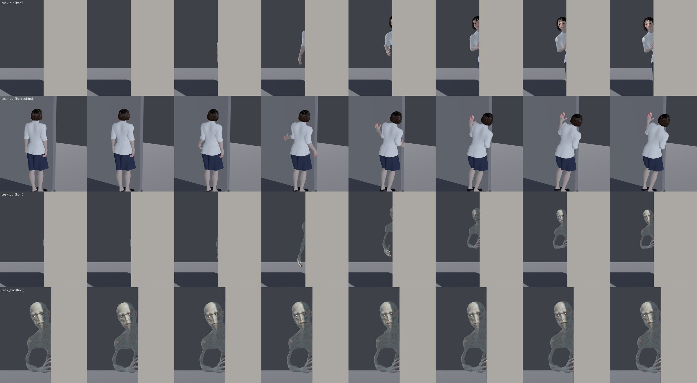
Her hands are laid flat on the wall and never go into it, however long her fingers are. What her clip can't know is how thick your wall is: the fingers of the hand on its end lie along the end for a hand's length, so on a wall thinner than that their tips stand out past its front.
How far the wall has to be in front of her is in her bake's record, by her own body: a hand's breadth past a person's toes, 40 cm for a hunched ghoul whose face is that far ahead of its feet. She stands by it herself.
A jump scare
Four clips that start already wound up, so she can be shown mid-scare with no lead-in, and that say how long to show her:
lunge | From a crouch: a step and both hooked hands thrown at your face. The peak is 0.38 s in. |
loom | From bent double with her head hanging: whipped upright onto her toes, leaning over you. |
snap | Stood still with her head down: it snaps up at you and tilts. For someone you thought was a mannequin. |
claw | From all fours: a hand clawed up at you from the floor. Ends on all fours. |
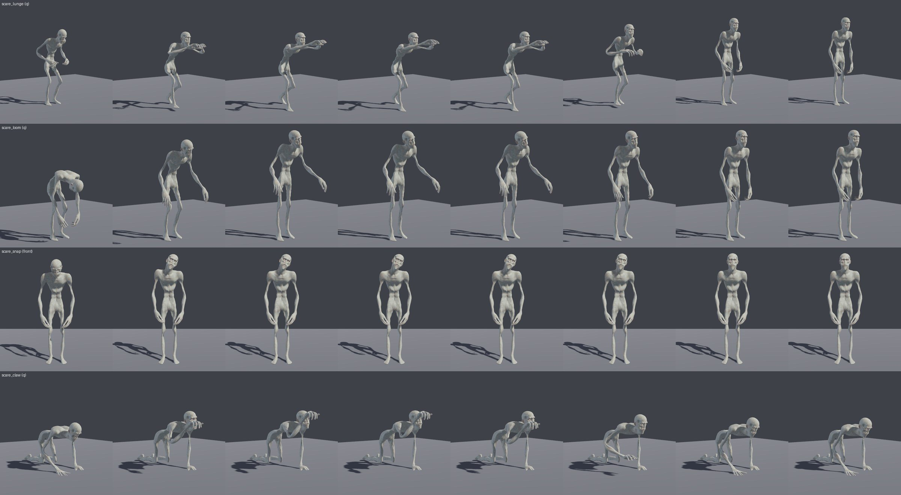
m.scare("lunge", player, true) # turned to the player, thrown, and hidden 0.98 s later (the clip's own "show")
var i := m.scare_info("lunge") # {peak: 0.38, show: 0.98, reach: 0.87}: stand her `reach` and a little more from you
With then hide she's gone when it's been shown: the scare "that briefly appears". Without, she comes back up to standing. A scare area or a cue can fire it: an act with Act scare.
12Her head follows you
On her Motion node tick Head follows, or from a script m.head_follow(true). Her head and neck turn to the
player on top of whatever clip she's playing, a little of the turn taken by her chest, her eyes leading. It's a correction
after her animation each frame, not an animation of its own: she can walk, sit or eat and watch you do it.
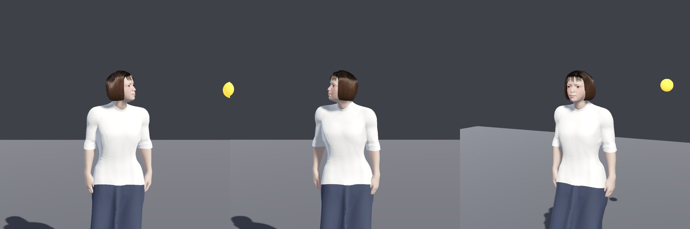
| Range | The whole arc she follows in, 160 degrees unless you set it: straight ahead is 0, so that's 80 to her left and 80 to her
right. m.head_follow(true, null, 120): 60 each side. 360: all the way round (an owl; a ghost). |
| Past the range | Lets go: her head eases back to her animation's. Holds at the limit: it stays turned as far as it goes, watching for you to come back. |
| Who | The player unless you name someone: m.head_follow(true, $Door), a node or a point. |
| Off | m.head_follow(false). Eased, not snapped. |
Once it's on she has an HSHeadTrack node under her skeleton (the Look plugin's; you can also add one by hand under any character's Skeleton3D). Its own settings: how far up and down she'll look (40 and 45 degrees), how much of the way (Amount: 0.5 is a glance), how fast (Turn speed, 260 degrees a second: she never whips round), how much her chest takes, a Max distance past which she doesn't bother, and Snappy: in sudden steps, for a creature.
13Things in her hand: the grip
For her to look as if she really picked something up, the thing has to sit in her hand the right way round and her fingers have to close to its thickness. A prop says how with a grip: an HSGrip node under it (the Look plugin's).
- Select the prop in the Scene dock. Add a child node: HSGrip.
- Move it to the middle of where a hand closes round the prop. Its green arrow runs along the handle toward the thumb; its blue arrow points at the palm (the side the hand comes from).
- In the 3D view it draws the handle as a ring at its thickness with a hand round it, and four dots to drag: thickness, length, mouth (the rim she drinks from, the side she bites) and tip (the far end, for a thing that's swung).
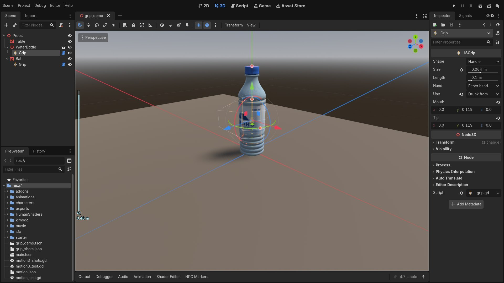
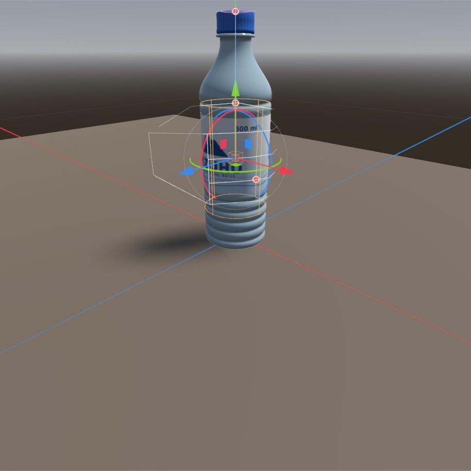
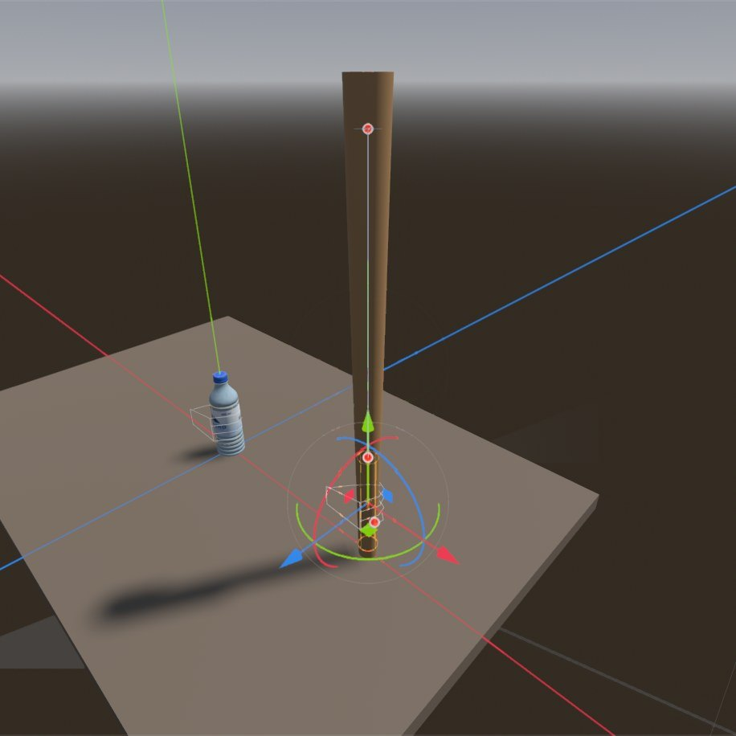
| Shape | Handle: a fist round it (a bat, a bottle, a can). Ball: the whole hand round it (an apple). Pinch: between finger and thumb (a key, a pill). |
| Size | How thick it is where the fingers close: a bat 3.5 cm, a can 6.6, a mug's handle 1.2. |
| Hand | Either, or only the right or the left (a mug's handle is on one side). |
| Use | Just held, Eaten, Drunk from. |
Then anything that puts it in her hand uses it: m.pick_up(thing, true), m.drink(thing), m.eat(thing),
a marker's Pick up, Eat or Drink. She walks to it, her hand goes onto the grip, the thing turns into her hand, her fingers
close to its size. Drinking, the mouth point is carried to her lips and tipped; eating, the bitten side, twice, and then
the thing is gone (hidden, not deleted). Drunk from, it stays in her hand: m.drop() lets go of it.
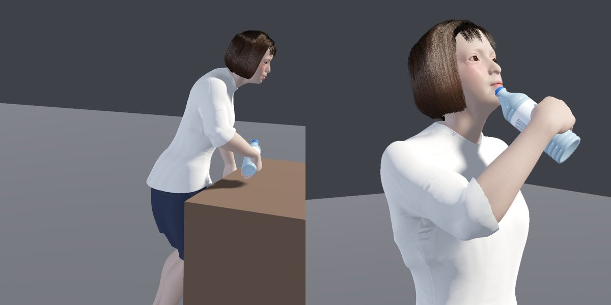
The clips alone: eat and drink bring her fist to her mouth with nothing in it, which reads from across a room.
With a thing and a grip, her hand is carried the last of the way for that thing (the Look plugin's HSHandIK, put under her by itself).
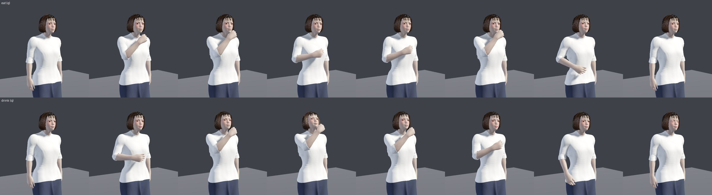
14Fights
One punch, one swing, one way of being hit; each also for the left hand.
m.punch(player) # she walks to where it reaches, turns with them, throws it m.swing($Intruder) # the same with whatever she holds: a bat picked up with m.pick_up(bat, true) m.struck.connect(func(who, kind): print(who.name, " was hit with a ", kind))
She keeps turning to whoever it is until just before it lands, and her fist (or the tip of what she holds, by its grip)
is carried onto where they are at that moment: someone who stepped aside is still hit, someone who got out of reach
isn't. struck says when it lands; whoever is hit is told too (take_hit(by) on a character with a Motion node:
she reels; on the starter's player, struck(by, kind): your view is knocked aside and levels again, a scare
is heard by the Fear node and the director, and the player's hit signal says who and with what). Aimed at the player it stops a hand's breadth short of your eye.
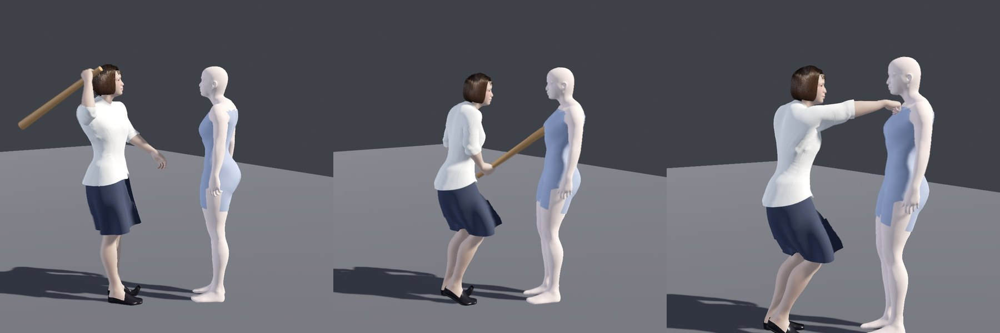
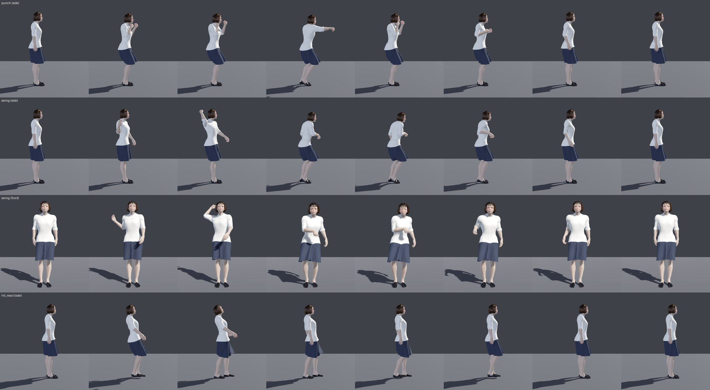
| Hit m | On her Motion node: how near her fist has to get for a blow to count (0.3 m). |
| Short of you | How far short of the player's eye a blow stops (0.16 m). |
15In the Director
A character whose model was baked plays her own idle, walk, run and sitting wherever a move is left empty, and her walk keeps step with how fast a behaviour moves her. The Animate tab says which moves her model carries; fill the rest from the library as before, or leave them.
16Good to know
- A seat that isn't 45 cm high: she's raised or lowered to meet it, up to 12 cm. Her feet float or sink by that much.
- A handle that isn't a metre up, a thing between two heights: she stands so her hand lands near it; it can be off by a few centimetres.
- She walks in straight lines between the places you give her (
m.go([a, b, c])for a way round something). - What she picks up is put away (hidden) as she straightens, unless you say keep it in her hand.
- The left hand's clips start with her weight on the other leg: the blend into them is a small shift of weight.
- A thing in her hand is held by its grip (section 13). A door's handle is still only reached for: her hand closes near it.
- The head, the grip and the blows need the Look plugin in the project (every
godot_byhand.pyproject has it). Without it the clips play as they were made. - A thing lying flat is taken with her fingers a little into what it lies on: her hand knows where the grip is, not where the table's top is.